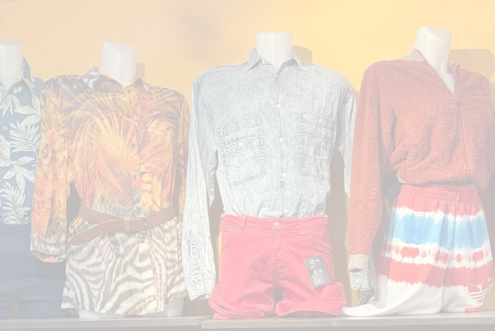

Super leuk dat je mijn eerste reclame review leest! De aankomende maand zal dit bericht online staan! Zo krijgt het bedrijf meer publicatie. Bij Ons is een gave winkel in het achterste gedeelte van Amsterdam centrum! Ik was er 2 weken geleden en dit is een groot succes! Ik ga hier dus ook zeker vaker heen, het is een gezellig en warm sfeertje in de winkel. het doel van de winkel met iedereen is welkom is dus zeker weten duidelijk. Persoonlijk geef ik de winkel 4 sterren op eco vriendelijk, de winkel laat consistent video’s zien over hoe hun de winkel eco vriendelijk behouden. Dit geven ze aan door: Reduse, Reuse, Recycle. Ik vind het zeker heel mooi dat hun dit overal extra overbrengen door de winkel. Zo blijft hun eco doel zeker vast hangen.
Openingstijden
Ma t/m zo 10:30 - 18:00
The message
Hun bericht is dat iedereen welkom is, dit is namelijk een genderneutrale vintage winkel. Ook willen ze hun doel erg duidelijk maken dat dit eco vriendelijk is. zo vinden ze dat als je vintage kleding bij hun koopt je een verhoging maakt met de impact van de “fashion industrie” dit is ook zo, alles wordt namelijk vaak weggegooid. ook geef je zo een nieuw leven aan oude kleding.